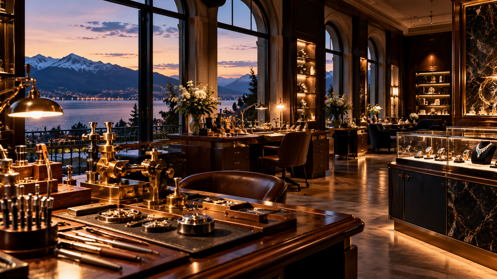
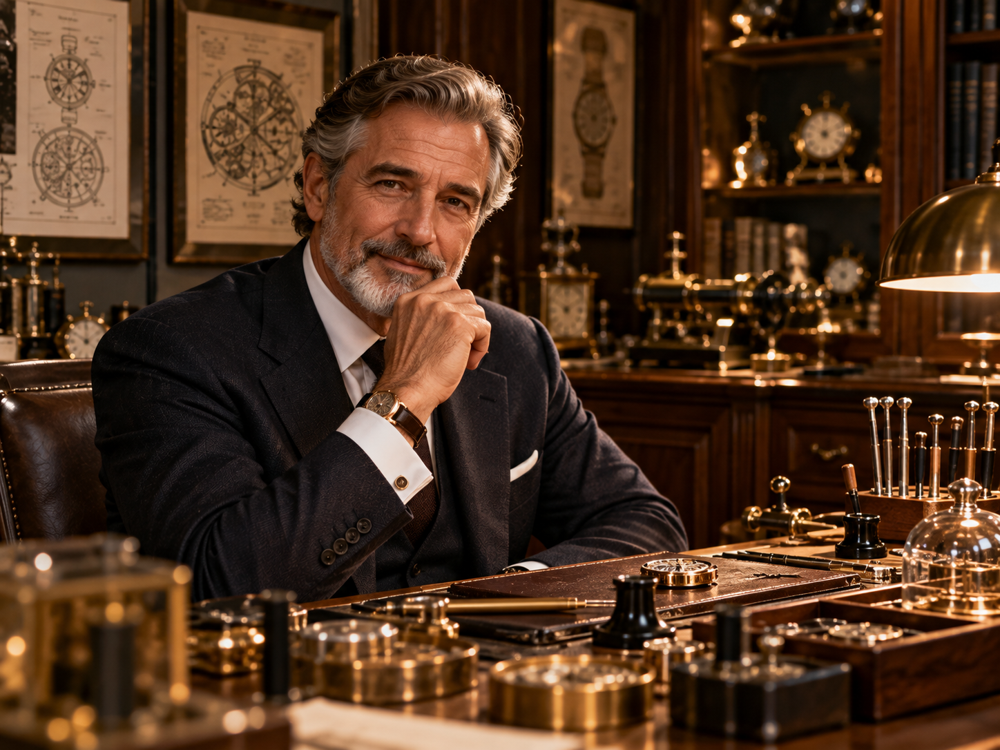

A Philosophy of Permanence.
Founded on the belief that true luxury is defined by time, restraint, and mechanical perfection, AURELLE creates limited-production timepieces and bespoke jewelry for discerning collectors worldwide.

Bridging Swiss Horology & High Jewelry.
Established in 1987 in the heart of Swiss watchmaking traditions, AURELLE began as an independent studio dedicated to micro-engineering and haute joaillerie.
By controlling every phase of creation—from CAD micro-modelling and gold alloy casting to hand beveling and final chronometric regulation—we ensure that every object bearing the AURELLE mark stands as a masterwork of permanence.
Guided by Three Directives.
The immutable foundation underlying every watch movement, gem setting, and custom commission created within our Atelier.
Precision
Tolerances measured in single microns. Every gear tooth, escape wheel, balance spring, and diamond prong is calibrated with unyielding horological accuracy to ensure peak performance for generations.
Restraint
Elimination of the extraneous. We honor classical proportions, golden-ratio geometry, mirror-polished bevels, and quiet, confident aesthetic balance where every curve serves a purpose.
Permanence
Engineered to transcend transient fashion cycles. Constructed with solid 18K gold, grade 5 titanium, and VVS diamonds built to endure centuries of wear and become cherished heirlooms.

Hands Guided by Decades of Practice.
While modern engineering grants accuracy, only human hands impart soul. Our team unites master horologists, gemologists, lapidaries, and engravers whose craft has been honed over decades.
Each component of an AURELLE timepiece undergoes dozens of hours of hand finishing, including Anglage (hand beveling), Perlage (circular graining), and mirror polishing.
The Six Standards of Excellence.
Every AURELLE creation undergoes an uncompromising sequence of precision disciplines, from ethical metallurgy to Swiss federal assay certification.
Ethical Material Selection
Rigorous sourcing of conflict-free VVS1 diamonds and 100% recycled 18K gold and 950 platinum alloys certified by Zurich refiners.
CAD Micro-Modelling
Volumetric 3D computer-aided modelling to test gear tooth engagement, case ergonomic curvature, and diamond light refraction.
Artisanal Hand Crafting
Master jewelers and horologists carve movement bridges using gentian wood sticks, diamond paste, and 10x microscope inspection.
Horological Calibration
Mechanical movements undergo 5-position temperature and orientation testing to achieve chronometric variance under +1.5s/day.
Dual Hallmark Inspection
Final microscopic inspection verified by the Swiss Federal Assay Office and stamped with official St. Bernard head quality hallmarks.
Vault Presentation
Encased in hand-carved mahogany presentation boxes, complete with GIA gem certificates and GPS-tracked armored courier delivery.
True Luxury Is Never Rushed.
Explore our current collection or request a personal consultation with our master artisans.
Explore The Collections →